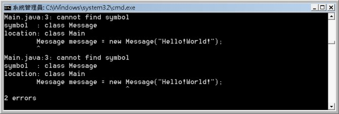
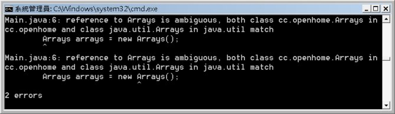

|
|
在 使用 package 分類管理 中說明過，當你在定義類別時，使用package關鍵字宣告，package就成了類別完整名稱的一部份。如果要使用java指令執行時，就必須指定完整類別名稱，例如 使用 package 分類管理 中的指令： java cc.openhome.Main 如果在撰寫程式時，若需要使用某個package管理下的類別，基本上也必須指定完整名稱，例如：
package cc.openhome; 可以直接在編譯時下-d引數，讓編譯器為你產生對應package的資料夾： javac -d c:\workspace Message.java 在不同的package下，若要使用這個類別，就要指定完整的名稱，例如：
public class Main {如果不使用完整的名稱，例如： public class Main { public static void main(String[] args) { Message message = new Message("Hello!World!"); System.out.println(message.getText()); } } 則編譯Main.java時會發生以下的錯誤：  因為你在程式中，指定要使用Message類別，編譯器就會直接在Classpath下，找Message.class，但並沒有找到，所以編譯器不知道你所謂的Message是什麼東西，也就是出現cannot find symbol的訊息。 但是每次要寫程式時，若都得寫完整名稱，其實是很麻煩的一件事，你可以用import偷懶一下，例如：
import cc.openhome.Message; 當編譯器剖析Main.java看到import的宣告時，會先記得有這些名稱，在繼續剖析至Message該行時，發現它不認識Message是什麼東西，但它記得你用import告訴過他，如果遇到不認識的名稱，可以比對一下import過的名稱，編譯器試著使用cc.openhome.Message，結果可以在Classpath路徑中，cc資料夾、openhome資料夾下找到Message.class，於是可以進行編譯。 所以，import其實只是告訴編譯器，看到不認識的名稱，可以回來查一下import過的名稱，import讓你少打一些字，讓編譯器多為你作一些事。 如果同一個套件下，有多個類別會使用到，你也許會多用幾次import： import cc.openhome.Message; import cc.openhome.User; import cc.openhome.Address; 但你可以更偷懶一些，用以下的import語句： import cc.openhome.*; 以這個例子來說：
import cc.openhome.*; 當編譯器剖析Main.java看到import的宣告時，會先記得有cc.openhome這個package名稱，在繼續剖析至Message該行時，發現它不認識Message是什麼東西，但它記得你用import告訴過他，如果遇到不認識的名稱，可以比對一下import過的名稱，編譯器試著將cc.openhome與Message結合在一起為cc.openhome.Message，結果可以在Classpath路徑中，cc資料夾、openhome資料夾下找到Message.class，於是可以進行編譯。 偷懶也是有個限度，如果你自己寫了一個Arrays： package cc.openhome; public class Arrays { ... } 可以直接在編譯時下-d引數，讓編譯器為你產生對應package的資料夾： javac -d c:\workspace Arrays.java 接著若用以下的方式： import java.util.*; import cc.openhome.*; public class Main { public static void main(String[] args) { Arrays arrays = new Arrays(); ... } } 編譯時，你就會發現有以下的錯誤：  當編譯器剖析Main.java看到import的宣告時，會先記得有cc.openhome這個package名稱，在繼續剖析至Arrays該行時，發現它不認識Arrays是什麼東西，但它記得你用import告訴過他，如果遇到不認識的名稱，可以比對一下import過的名稱，編譯器試著將cc.openhome與Arrays結合在一起為cc.openhome.Arrays，結果可以在Classpath路徑中，cc資料夾、openhome資料夾下找到Arrays.class，但編譯器試著將java.util與Arrays結合在一起為java.util.Arrays，發現也可以在Java SE標準API的rt.jar中（預設的類別載入路徑之一，這牽涉到類別載入器的說明，更後面還會談到），對應的java資料夾下util資料夾下找到Arrays.class，於是編譯器困惑了，到底該使用cc.openhome.Arrays還是java.util.Arrays？ 遇到這種情況時，就不能偷懶了，你要使用哪個類別名稱，就乖乖一個字一個字照著打出來： import java.util.*; import cc.openhome.*; public class Main { public static void main(String[] args) { cc.openhome.Arrays arrays = new cc.openhome.Arrays(); //... } } 這個程式就可以通過編譯了。簡單地說，import是偷懶工具，不能偷懶就回歸最保守的寫法。另外，學過C/C++的也請注意，import跟#include一點都不像，無論原始碼中有無import，編譯過後的.class都是一樣的，不會影響執行效能。最多就是說，import會讓編譯時的時間拉長一點而已。 在Java SE中有許多常用類別，像是寫第一個HelloWorld時所使用的System，其實也是有設定package，完整名稱其實是 java.lang.System，在java.lang這個package下的類別由於很常用，預設就有import，這也是為什麼你不用寫以下的程式 碼來完成HelloWorld的原因： java.lang.System.out.println("Hello!World!"); 如 果類別位於同一個package中，彼此使用並不需要import，當編譯器看到一個沒有package名稱的類別名稱，會先在同一個套件範圍下尋找類 別，如果找到就使用，如果沒找到，再試著從import陳述的部份比對，記得java.lang預設就有import，所以沒有寫任何import陳述 時，其實也會試著比對java.lang的組合，看看是不是可以找到相應的類別。 |